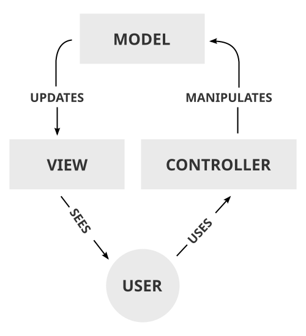
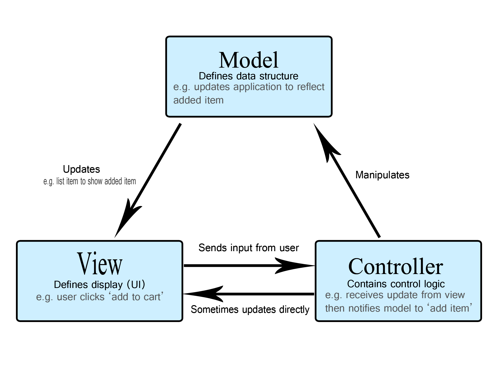
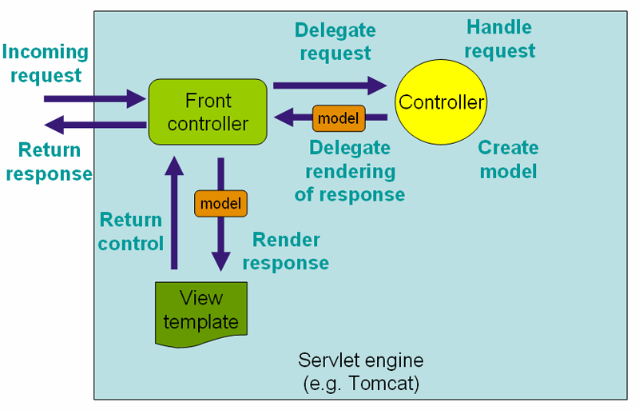

위키백과 · 사용자 순환형 사용자 → 컨트롤러(USES) → 모델(MANIPULATES) → 뷰(UPDATES) → 사용자(SEES). 세 역할과 사용자를 한 바퀴로 잇습니다.
MDN · 삼각형 관계형 모델·뷰·컨트롤러를 삼각형으로 두고, 상자마다 역할 설명을 적습니다. 화살표는 Manipulates, Updates, Sends input from user.
스프링 공식 문서 3.0 · 요청 흐름형 요청 → 프런트 컨트롤러 → 컨트롤러가 모델 생성 → 뷰 템플릿이 응답을 렌더링. 톰캣 안의 흐름으로 그립니다.MVC 패턴 그림으로 가장 흔한 모양입니다. 본문이 세 역할을 정의하므로 상자마다 역할을 적고, 컨트롤러에 BoardController를 붙였습니다.
Spring MVC라는 이름은 MVC 패턴에서 왔습니다. MVC 패턴은 웹 애플리케이션의 코드를 데이터를 담는 모델(Model), 화면을 만드는 뷰(View), 요청을 받아 처리하는 컨트롤러(Controller) 로 나누는 설계 방식입니다. 요청 주소마다 처리할 메서드를 모아 둔 BoardController가 이 중 컨트롤러에 해당합니다.
웹에서의 MVC를 요청이 들어와 화면이 나가는 순서로 그립니다. 디스패처 서블릿은 1.4.2에서 나오므로 여기서는 뺐습니다.
Spring MVC라는 이름은 MVC 패턴에서 왔습니다. MVC 패턴은 웹 애플리케이션의 코드를 데이터를 담는 모델(Model), 화면을 만드는 뷰(View), 요청을 받아 처리하는 컨트롤러(Controller) 로 나누는 설계 방식입니다. 요청 주소마다 처리할 메서드를 모아 둔 BoardController가 이 중 컨트롤러에 해당합니다.